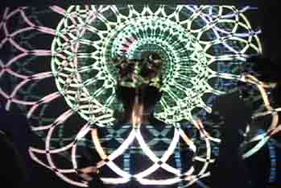
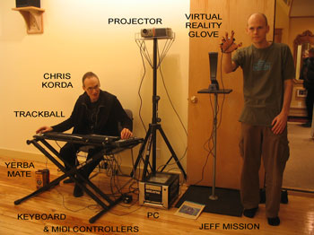
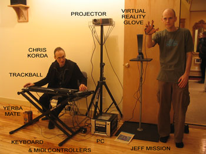

Whorld
Whorld is a free, open-source visualizer for sacred geometry. It uses math to create a seamless animation of mesmerizing psychedelic images. You can VJ with it, make unique digital artwork with it, or sit back and watch it like a screensaver.
Whorld's visualization is controlled via parameters which can be adjusted manually, or modulated by oscillators. A given setting of the parameters and their oscillators form a patch. You can use the demo patches, or create your own.
Patches can be grouped together in a playlist. You can play patches manually, or Whorld can auto-play them for you. Whorld also includes a crossfader, which allows you to interpolate between two patches (AKA "tweening").
Whorld is optimized for VJing. All of its functions are available in full-screen mode, via shortcut keys, mouse or trackball, and MIDI controllers. Whorld can be synchronized to music, using tap tempo, or MIDI clocks.

Whorld dancers at Psyforia (photo: Ashanti), more here.
Join the Whorld experience! See upcoming shows.
April 1, 2020
WebWhorld is an online version of Whorld, created by Robert Muth. Nothing to download, just follow the link and select a patch. It's compatible with Whorld's original ".whp" patch files, runs in any modern browser, and even does antialiasing! Thank you Robert! The source is here.
Jun 14, 2009
Plasmagon is a cool new patch that generates Moiré patterns with Bézier curves. Try it!
Feb 04, 2009
WiiWhorld Explained features the creators of WiiWhorld in lab coats, explaining what WiiWhorld is and how to use it. Somehow "Dr. Who" comes to mind. In the words of one viewer, "Hilarious, awesome, nerdy, scientific, informative, and right on!"
Apr 6, 2008
Whorld 1.7 is available for download. This is the version you need for WiiWhorld! It adds global parameters which affect all rings at once, plus new Bézier curve parameters, and important bug fixes; for details, see the release notes. Similarly enhanced versions of the Freeframe plugins are also available for download: WhorldFF 1.3 and UltraWhorld 1.1.
Mar 23, 2008
Chris Korda (developer of Whorld and FFRend) and Jeff Mission have been working on a project to control real-time, generative geometric visuals with the ever-popular Nintendo Wiimote. The project is called WiiWhorld, and a WiiWhorld demo video is now available.
Aug 14, 2007
UltraWhorld is an enhanced version of the Whorld Freeframe plugin. It exposes nearly all of Whorld's parameters and switches to the host, allowing you to run Whorld from within your favorite VJ application without sacrificing real-time control.
May 29, 2007
Version 1.2 of the WhorldFF Freeframe plugin is available for download. It adds support for 16-bit bit color and two new master settings; for details, see the release notes.
March 17, 2007
Whorld 1.6 is available for download
July 7, 2006
The Freeframe plugin crash in Visual Jockey Gold is now fixed. The bug could also affect other Freeframe hosts, so all users should download the latest version.
June 23, 2006
Whorld 1.5 is available for download. It adds Video Overlay, and patch thumbnails; for details, see the release notes.
June 10, 2006
Whorld will be featured at The Art of the VJ, June 15 at the Central Square Library in Cambridge. Next up is Firefly on July 1, and then Psyforia on Friday July 14.
May 1, 2006
The Whorld Freeframe plugin is available for download. Please read the ReadMe.
Apr 25, 2006
Whorld 1.4 is available for download. It adds Bézier curves, and patch modes; for details, see the release notes.
Apr 22, 2006
Whorld will be featured at Psyforia, Friday May 19.
Apr 10, 2006
Whorld 1.3 is available for download. It adds the Trail and Convex features, selectable zoom types, and a new oscillator waveform; for details, see the release notes.
Apr 1, 2006
Wouldn't it be nice if the background could be video instead of a solid color? It's still in the alpha stage, but here are some sample images.
Mar 31, 2006
Chris Korda will VJ at Movement of Sound in Springfield, on Wednesday April 19.
Mar 21, 2006
New features are on the way! Trail gives each ring its own origin, allowing lifelike motion, and Bézier replaces the straight lines with curves! Here's a paper about the curve points.
Mar 15, 2006
Whorld 1.2 is available for download. It allows master override of all oscillator properties, via MIDI; for details, see the release notes.
Feb 16, 2006
Whorld 1.1 is available for download. It eliminates the movie export's 2 GB limit.
Feb 7, 2006
Whorld will be presented at the March dorkbot in NYC.
Jan 14, 2006
Whorld 1.0 is available for download.
Jan 7, 2006
The beta version is ready to go except for the help file, which should be completed any day now.
Dec 30, 2005
Whorld will be featured at Psyforia, Friday Jan 27.
Aug 22, 2005
Whorld debuts at Beat Research, in The Enormous Room, 567 Massachusetts Avenue, Cambridge, MA
Aug 15, 2005
About half of the site is up. Beta release is still at least a month away. Watch this space...

Shows
Chris Korda and Jeff Mission with Whorld gear
07/14/06 Psyforia (Sonic Beating)
07/10/06 Beat Research (Enormous Room)
07/07/06 Circle (VFW)
07/01/06 Firefly (NH)
06/15/06 The Art of the VJ (Cambridge)
05/19/06 Psyforia (Sonic Beating)
04/19/06 Movement of Sound (Springfield)
03/10/06 Eyewash at Monkeytown (Brooklyn)
03/04/06 Tribal Groove (Watertown)
03/01/06 dorkbot (NYC)
02/25/06 MIT senior house (Cambridge)
02/11/06 Tribal Groove (Watertown)
01/27/06 Psyforia (Sonic Beating)
12/03/05 LOG (Redtail)
11/11/05 Katrina benefit (Worcester)
10/31/05 Circle (Davis Sq. VFW)
10/22/05 Avatar (COSM)
10/15/05 Open Studios (Fort Point)
08/22/05 Beat Research (Enormous Room)
![ Chris Korda and Jeff Mission with Whorld gear 07/14/06 Psyforia (Sonic Beating) 07/10/06 Beat Research (Enormous Room) 07/07/06 Circle (VFW) 07/01/06 Firefly (NH) 06/15/06 The Art of the VJ (Cambridge) 05/19/06 Psyforia (Sonic Beating) 04/19/06 Movement of Sound (Springfield) 03/10/06 Eyewash at Monkeytown (Brooklyn) 03/04/06 Tribal Groove (Watertown) 03/01/06 dorkbot (NYC) 02/25/06 MIT senior house (Cambridge) 02/11/06 Tribal Groove (Watertown) 01/27/06 Psyforia (Sonic Beating) 12/03/05 LOG (Redtail) 11/11/05 Katrina benefit (Worcester) 10/31/05 Circle (Davis Sq. VFW) 10/22/05 Avatar (COSM) 10/15/05 Open Studios (Fort Point) 08/22/05 Beat Research (Enormous Room)](images/equipment-staff.jpg){kind=link}